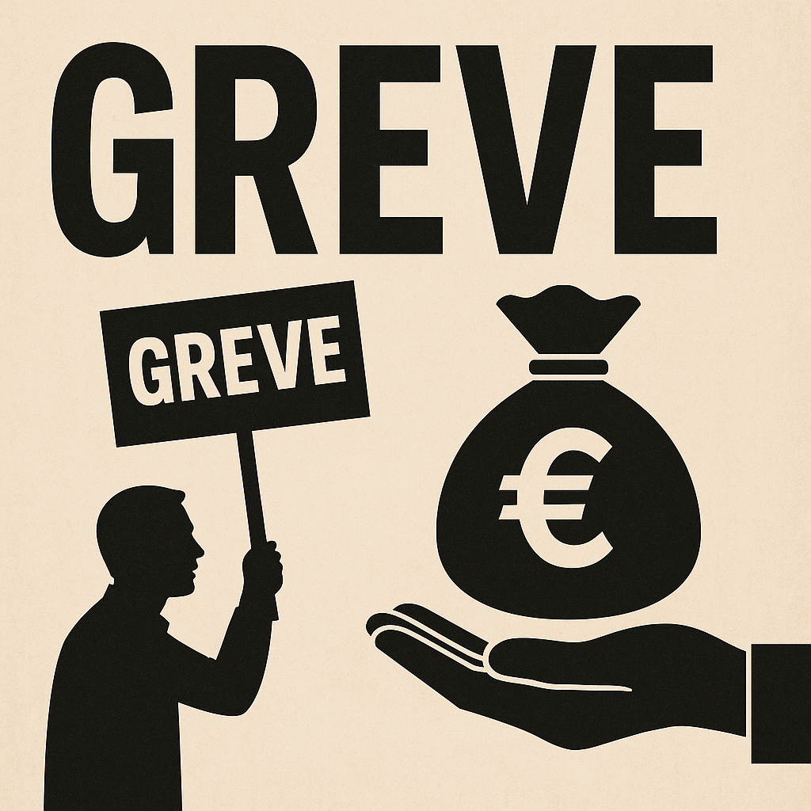

Publicado em 2025-05-09 10:41:06
Quando os sindicatos tocam a rebate, só os do Estado é que têm tambor... os do privado andam calados, não vá o patrão ouvir.
Portugal, esse prodígio de invenção coletiva, conseguiu mais uma façanha digna de figurar no Museu das Ironias Nacionais: criou o direito à greve... só para quem não sofre consequências por exercê-lo. Um milagre digno de Fátima, mas com mais papelada e menos fé.
Nas empresas privadas, os trabalhadores vivem num eterno jogo do não te estiques. A greve? Sim, está na Constituição. Mas também está a prestação da casa, o recibo do infantário e a ameaça do "há quem queira o teu lugar". Assim, o direito à greve tornou-se como o direito a sonhar: existe, mas convém manter-se discreto.
Já na função pública, o cenário muda de cor — é primavera sindical todo o ano. Há greves por causa dos salários, dos horários, da falta de papel higiénico nos WC's, da mudança do café da máquina. Tudo legítimo, claro está, mas com uma nuance essencial: quem paga o espetáculo não são os grevistas, nem os chefes, nem o Estado que se diz neutro — é o povo, esse eterno patrocinador de causas alheias.
Os sindicatos públicos, esses mastodontes de protesto institucionalizado, erguem-se com pompa, emitindo comunicados e ameaçando paralisações com a mesma frequência com que os portugueses trocam de governo: demasiado.
Enquanto isso, o país afunda-se em greves intermitentes, serviços mínimos que são mínimos demais e direitos adquiridos que nem Platão compreenderia. E tudo isto numa economia que rasteja, com produtividade digna de um caracol asmático e um setor privado onde pedir aumento é quase heresia.
Numa nação onde os privados trabalham para sustentar os públicos — e os públicos fazem greve porque podem —, a equidade laboral tornou-se um conceito decorativo, pendurado na parede ao lado do retrato oficial do Presidente.
Moral da história?
Se fores trabalhador do privado, reza para não precisares de greve. Se fores do público, marca com antecedência — não vá coincidir com a greve da CP, dos médicos, dos professores, dos oficiais de justiça, da ASAE, dos técnicos de diagnóstico, dos enfermeiros, dos revisores, dos motoristas dos autocarros, ou... da meteorologia.
Por Francisco Gonçalves